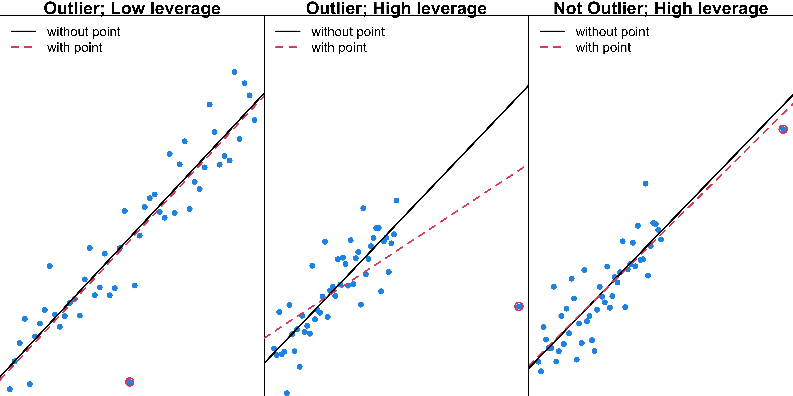
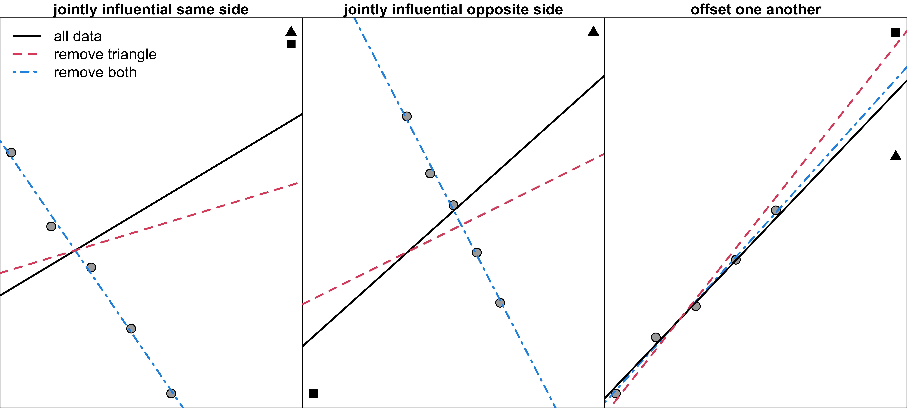

Regression Diagnostics
Unusual Data
MATH 4780/MSSC 5780 Regression Analysis
Unusual Data
Outliers
Leverage
Influence
- We already learned SLR and MLR as well as the inference and prediction methods for the parameters or the variables we are interested.
- And I promise, the most mathematical part has been passed. From now on, you should have more fun studying regression. Alright.
- Remember our model are built upon some assumptions. Before talking about how we deal with violation of model assumptions, I’d like to spend some time talking about the unusual data.
- The quality of data affects the quality of analysis results. If our data contains some data points that are so different from other points, our inference or prediction results may be highly distorted by those unusual data. (Can be seen as violation of normality assumption)
- So when doing data analysis, we need to pay attention to those unusual points if they exist, and understand how they affect our analysis result.
- The showing up of the unusual data may be a signal that our regression model fails to capture some important characteristics of the data, indicating bad model fitting, or we need some other predcitor to capture that characteristic.
Outliers: Unusual \(y\)
- An outlier is a case whose response value is unusual given the value of the regressors.
- Neither the x nor y value of the outlier is individually unusual, as it is clear from the marginal distribution of each variable.
Leverage: Unusual \(x\)
- Points that are away from the center of the data cloud of \(\color{blue}{\bf x}\) are called leverage points.
time cases distance
1 16.7 7 560
2 11.5 3 220
3 12.0 3 340
4 14.9 4 80
5 13.8 6 150
6 18.1 7 330
7 8.0 2 110
8 17.8 7 210
9 79.2 30 1460
10 21.5 5 605
11 40.3 16 688
12 21.0 10 215
13 13.5 4 255
14 19.8 6 462
15 24.0 9 448
16 29.0 10 776
17 15.3 6 200
18 19.0 7 132
19 9.5 3 36
20 35.1 17 770
21 17.9 10 140
22 52.3 26 810
23 18.8 9 450
24 19.8 8 635
25 10.8 4 150Observation 9 and 22 are away from the center of \({\bf x}\) space, and are likely leverage points.

- leverage certainly will have a dramatic effect on the model summary statistics such as \(R^2\) and the standard errors of the regression coefficients
Influence: Unusual \(x\) and \(y\)
- An influential point has great influence on estimated regression coefficients.
\[\text{Influence} = \text{Leverage} \times \text{Outlyingness}\]

- What kind of data points have such great influence power?
- Well if a point is an outlier with high leverage, then it becomes a influential point.
- We got to be very careful about influential points because the estimated regression coefficients change a lot with and without these points.
- Our analysis conclusion may be completely opposite => explain the figure.
Unusual Data: Outliers, Leverage and Influence

Measuring Leverage: Hat Values
\({\bf H} = {\bf X}({\bf X}' {\bf X}) ^{-1} {\bf X}'\).
The hat value \(h_{ii}\) is the \(i\)th diagonal element of \(\bf H\).
\(h_{ii} \in \left[\frac{1}{n}, 1\right]\) is a standardized measure of the distance of the \(i\)th case from the centroid of the \(\bf x\) space, taking into account the correlational structure of the \(x\)s.
The larger the \(h_{ii}\) is, the farther the point \({\bf x}_i\) lies to the centroid of the \(\bf x\) space.

- The contours show the same or constant leverage in the 2-dim data ellipses.
- The two black points are equally unusual and have equally large hat values.
- example: one point at inner contour, the other outer contour
Measuring Leverage: Hat Values
\(\bar{h} = \frac{\sum_{i=1}^n h_{ii}}{n} = p/n\). A point with \(h_{ii} > 2\bar{h}\) is considered a leverage point.
. . .
9 22 10 16 21 24 12 1 20 3 19 18 11
0.498 0.392 0.196 0.166 0.165 0.121 0.114 0.102 0.102 0.099 0.096 0.096 0.086
4 7 14 5 2 25 8 13 17 6 23 15
0.085 0.082 0.078 0.075 0.071 0.067 0.064 0.061 0.059 0.043 0.041 0.041 p <- 3
n <- dim(delivery_data)[1]
2 * p/n[1] 0.24- Observation 9 and 22 are identified as high-leverage points.

- \(\hat{y}_i = b_0 + b_1 ~x_i = h_{i1}y_1 + h_{i2}y_2 + \cdots + h_{in}y_n\)
- \(h_{ii} = \sum_{j=1}^nh_{ji}^2\) summarizes the potential influence (the leverage) of \(y_i\) on all the fitted values \(\hat{y}_j\), \(j = 1, \dots, n\).
- \(2\bar{h}\) may be greater than 1, which is not applicable.
- A point with \(h_{ii} > 2\bar{h}\) is remote enough to be considered a leverage point.
- 2p/n corresponds to 5% of the data when x is multivariate normal and n and p are large.
- Use 3p/n when n small. hat_i[hat_i > 2 * p/n]
R Lab Delivery Time Leverage Points
9 22 10 16 21 24 12 1 20 3 19 18 11
0.498 0.392 0.196 0.166 0.165 0.121 0.114 0.102 0.102 0.099 0.096 0.096 0.086
4 7 14 5 2 25 8 13 17 6 23 15
0.085 0.082 0.078 0.075 0.071 0.067 0.064 0.061 0.059 0.043 0.041 0.041 - Observation 9 and 22 are identified as high-leverage points.
Warning in text.default(c(7L, 3L, 3L, 4L, 6L, 7L, 2L, 7L, 5L, 16L, 10L, : length(labels) > max(length(x), length(y));
'labels' truncated to length 23
- Most cutoff works better for large sample data
- problem-specific unit change may be large after removing the influential point, even though the measures are not greater than the cutoff.
Detecting Outliers
Measure the conditional unusualness of \(y\) given \({\bf x}\).
❌ Can’t just use residual \(e_i\) to measure the unusualness of \(y_i\)!
If the point is also a leverage point (large \(h_{ii}\)), it’s residual tends to be small.
- Can’t just use residual \(e_i\) to measure the unusualness of \(y_i\)! If the point is also a leverage point (large \(h_{ii}\)), it’s residual tends to be small. -> Check plot: these points force the regression line or surface to be close to them.
. . .
- R-student residual: \[t_i = \frac{e_i}{\sqrt{s^2_{-i}(1-h_{ii})}}\] where \(s^2_{-i}\) estimates \(\sigma^2\) based on the data with the \(i\)th point removed.
- \(t_i \sim t_{n-p-1}\) and a formal testing procedure can be used for detecting outliers.
- A point with \(|t_i| > 2\) needs to be examined with care.
- (Eq (4.12) in LRA)
- There are lots variants of residuals that are for several different purposes.
- The so-called R-student residual is recommended for detecting outliers.
- Bonferroni correction is better for testing n residuals simultaneously.
- A point with \(|t_i| > 2\) needs to be examined with care (\(5\%\) of the data).
Detecting Outliers - Residual Plot
9 4 18 10 11 19 8 2 14 13 7 15 17
4.31 1.64 1.12 0.81 0.71 0.57 0.36 0.36 0.33 0.32 0.26 0.21 0.13
3 25 6 5 12 16 21 23 22 24 1 20
-0.02 -0.07 -0.09 -0.14 -0.19 -0.22 -0.87 -1.48 -1.49 -1.54 -1.70 -2.00 
Measuring Influence
- The influence measures are those that measure the effect of deleting the \(i\)th observation.
\(DFBETAS_{j, i}\) measures the effect on coefficient \({b_j}\) when the \(i\)th observation is removed.
Cook’s Distance \(D_i\) measures the effect of the \(i\)th observation on coefficient vector \({\bf b}\).
\(DFFITS_{i}\) measures the effect on fitted value \(\hat{y}_i\).
\(COVRATIO_{i}\) measures the effect on the precision of estimates (variance).
- Now we are going to learn some measures of influence.
- With all these measures, we can quantify how large impact a point can make on the model coefficients or model fitting in general.
- And the idea is to check the difference between model coefficients or model fitting results when the point is in the data and those when the point is deleted. round(sort(r_student, decreasing = TRUE), 2)
\(DFBETAS_{j, i}\)
- \(DFBETAS_{j, i}\) measures how much the regression coefficient \(b_j\) changes in standard error units if the \(i\)th observation is removed. \[DFBETAS_{j, i} = \frac{b_j - b_{j,-i}}{se_{-i}(b_j)}\] where
- \(b_{j,-i}\) is the \(j\)th coefficient estimate computed without the \(i\)th observation.
- \(se_{-i}(b_j)\) is the standard error of \(b_j\) computed without the \(i\)th observation.
- The \(i\)th point may be considered influential on \(j\)th coefficient if \(|DFBETAS_{j, i}| > 2/\sqrt{n}\).
- One issue: there are \(np\) DFBETAS measures.
\[DFBETAS_{j, i} = \frac{b_j - b_{j,-i}}{\sqrt{s_{-i}^2C_{jj}}} = \frac{b_j - b_{j,-i}}{se_{-i}(b_j)}\]
DF means difference; S means standardized. \[DFBETAS_{j, i} := \frac{b_j - b_{j(i)}}{\sqrt{S_{(i)}^2C_{jj}}} = \frac{r_{j, i}}{\sqrt{{\bf r}_j'{\bf r}_j}}{\frac{1}{\sqrt{1-h_{ii}}}}t_i\]
The denominator provides a standardization since it estimates the standard error of \(b_j\).
\(DFBETAS_{j, i}\) represents the combination of leverage measures and the impact of errors in the \(y\) direction.
The \(n\) elements in \({\bf r}_j'\) produce the leverage that the \(n\) observations have on \(b_j\).
\(\frac{r_{j, i}}{\sqrt{{\bf r}_j'{\bf r}_j}}\) is a normalized measure of the impact of the \(i\)th observation on the \(j\)th coefficient.
The measure is swelled by the leverage score \(h_{ii}\).
-
Point \(i\) is considered influential on \(j\)th coefficient if \(|DFBETAS_{j, i}| > 2/\sqrt{n}\).
- \(b_{j(i)}\): the \(j\)th coefficient computed without the \(i\)th observation
- \(S_{(i)}^2\): the estimate of \(\sigma^2\) based on the data with no the \(i\)th point (Eq. (4.12))
- \(C_{jj}\): the \(j\)th diagonal element of \({\bf(X'X)}^{-1}\)
- \({\bf r}_j'\): the \(j\)th row of the \(p \times n\) matrix \({\bf R = (X'X)^{-1}X'}\) \(({\bf b = Ry})\)
- \(r_{j, i}\): the \(ji\)th element of \({\bf R}\)
- \(t_i\): the \(i\)th R-student residual The n elements in the j th row of R produce the leverage that the n observations in the sample have on ˆβj
\(DFBETAS_{j, i}\) Example
(Intercept) cases distance
1 -0.19 0.41 -0.43
2 0.09 -0.05 0.01
3 0.00 0.00 0.00
4 0.45 0.09 -0.27
5 -0.03 -0.01 0.02
6 -0.01 0.00 0.00
7 0.08 -0.02 -0.01
8 0.07 0.03 -0.05
9 -2.58 0.93 1.51
10 0.11 -0.34 0.34
11 -0.03 0.09 0.00
12 -0.03 -0.05 0.05
13 0.07 -0.04 0.01
14 0.05 -0.07 0.06
15 0.02 0.00 0.01
16 0.00 0.06 -0.08
17 0.03 0.01 -0.02
18 0.25 0.19 -0.27
19 0.17 0.02 -0.10
20 0.17 -0.21 -0.09
21 -0.16 -0.30 0.34
22 0.40 -1.03 0.57
23 -0.16 0.04 -0.05
24 -0.12 0.40 -0.47
25 -0.02 0.00 0.01- Point 9 is influential, as its deletion results in a displacement of every coefficient by at least 0.9 standard deviation of \(b_j\).
Cook’s Distance \(D_i\)
- \(D_i\) measures the squared distance that the vector of fitted values moves when the \(i\)th observation is deleted. This, it measures overall model influence.
\[D_i = \dfrac{\sum_{k=1}^n \left( \hat{y}_{k, -i} - \hat{y}_{k}\right)^2}{p s^2} = \dfrac{r_i^2}{p}\frac{h_{ii}}{1-h_{ii}}, \quad i = 1, 2, \dots, n\]
- \(\hat{y}_{k, -i}\) is the fitted value of \(y_k\) computed without the \(i\)th observation.
- \(r_i = \dfrac{e_i}{\sqrt{s^2(1-h_{ii})}}\) is the Studentized residuals.
. . .
- What contributes to \(D_i\):
- How well the model fits the \(i\)th observation (larger \(r_i^2\) for poorer fit)
- How far the point is away from the remaining data (larger \(h_{ii}\) for higher leverage)
- \(\text{Influence} = \text{Leverage} \times \text{Outlyingness}\)
Consider points with \(D_{i} > 1\) to be influential.
- \[D_i = \frac{(\hat{{\bf y}}_{-i} - \hat{{\bf y}})'(\hat{{\bf y}}_{-i}-\hat{{\bf y}})}{p s^2} = \frac{r_i^2}{p}\frac{h_{ii}}{1-h_{ii}}, \quad i = 1, 2, \dots, n\]
- \(D_i > 1\) may risk missing unusual data. Use \(4/(n-p)\) instead. \[\begin{align} D_i& := \frac{\left( {\bf b}_{(i)} - {\bf b} \right)' {\bf X'X} \left( {\bf b}_{(i)} - {\bf b} \right)}{pMS_{res}}\\ &=\frac{r_i^2}{p}\frac{\mathrm{Var}(\hat{y}_i)}{\mathrm{Var}(\hat{e}_i)} =\frac{r_i^2}{p}\frac{h_{ii}}{1-h_{ii}}, \quad i = 1, 2, \dots, n \end{align}\]
- View \(D_i\) as the standardized distance between \(b\) and \(b_{-i}\).
- \(D_i > 0\) since \(X'X\) is positive definite.
- The magnitude of \(D_i\) is usually assessed by comparing it to \(F_{\alpha, p, n-p}\).
- If \(D_i = F_{0.5, p , n − p}\), then deleting point i would move \(b_{-i}\) to the boundary of an approximate 50% confidence region for \(\beta\) based on the complete data set.
- \(\frac{h_{ii}}{1-h_{ii}}\) This ratio can be shown to be the distance from the vector \(x_i\) to the centroid of the remaining data.
- It is the squared Euclidean distance (apart from pMS_Res) that the vector of fitted values moves when the \(i\)th observation is deleted.
- D is a scale-invariant measure of the influence of the ith case on all of the regression coeffcients, that is the distance between b and b(-i).
Cook’s Distance \(D_i\) Example
(Dii <- cooks.distance(fit_delivery) |> sort(decreasing = TRUE) |> round(2)) 9 22 20 24 1 4 10 21 18 23 11 19 2 14 16 8
3.42 0.45 0.13 0.10 0.10 0.08 0.05 0.05 0.04 0.03 0.02 0.01 0.00 0.00 0.00 0.00
13 7 12 15 5 17 6 25 3
0.00 0.00 0.00 0.00 0.00 0.00 0.00 0.00 0.00 Dii[Dii > 1] 9
3.4 - Observation 9 is influential using the cutoff of one, and the point 22 is not.
. . .
\(D_i > 1\) may risk missing unusual data. Use \(4/(n-p)\) instead.
Dii[Dii > 4/(n-p)] 9 22
3.42 0.45 9 22 20 24 1 4 10 21 18 23 11 19 2
0.965 0.280 0.059 0.041 0.041 0.030 0.015 0.015 0.011 0.007 0.004 0.001 0.000
14 16 8 13 7 12 15 5 17 6 25 3
0.000 0.000 0.000 0.000 0.000 0.000 0.000 0.000 0.000 0.000 0.000 0.000 pf(3.41835, 3, 22)[1] 0.96pf(0.45106, 3, 22)[1] 0.28The magnitude of D i is usually assessed by comparing it to F α , p , n − p . If D i = F 0.5, p , n − p , then deleting point i would move ˆb(i) to the boundary of an approximate 50% confidence region for β based on the complete data set.
\(DFFITS_{i}\)
\(DFFITS_{i}\) measures the influence of the \(i\)th observation on the \(i\)th fitted value, again in standard deviation units. \[DFFITS_{i} := \frac{\hat{y}_i - \hat{y}_{-i}}{\sqrt{s_{-i}^2h_{ii}}} = \left(\frac{h_{ii}}{1-h_{ii}}\right)^{1/2}t_i\] where \(\hat{y}_{-i}\) is the fitted value of \(y_i\) computed without the \(i\)th observation.
The denominator provides a standardization since \(\mathrm{Var}\left( \hat{y}_i\right) = \sigma^2h_{ii}\).
- \(DFFITS_{i}\)is essentially the R-student residual scaled by the leverage \([h_{ii}/(1-h_{ii})]^{1/2}\).
A point with \(|DFFITS_{i}| > 2\sqrt{p/n}\) needs attention.
- Chatterjee and Hadi (1988): cutoff \(2\sqrt{p/(n-p)}\)
\(DFFITS_{i}\) Example
1 2 3 4 5 6 7 8 9 10 11 12 13
-0.57 0.10 -0.01 0.50 -0.04 -0.02 0.08 0.09 4.30 0.40 0.22 -0.07 0.08
14 15 16 17 18 19 20 21 22 23 24 25
0.10 0.04 -0.10 0.03 0.37 0.19 -0.67 -0.39 -1.20 -0.31 -0.57 -0.02 9 22
4.3 -1.2 - Deleting point 9 displaces the predicted response \(\hat{y}_{-9}\) by over four standard deviations of \(\hat{y}_9.\)
\(COVRATIO_{i}\)
\(DFFITS_{i}\) and \(DFBETAS_{j, i}\) reflect influence on \(\hat{y}_i\) and \(b_j\), but do not indicate whether or not the presence of the \(i\)th point appreciably sharpened the estimation of the coefficient.
A scalar measure of precision, called generalized variance of \({\bf b}\) is \[GV({\bf b}) = \det \left( \mathrm{Cov}({\bf b}) \right) \]
To express the role of the \(i\)th observation on the precision of estimation, we use \[COVRATIO_{i} = \frac{ \det\left( \mathrm{Cov}({\bf b}_{-i}) \right) }{\det\left( \mathrm{Cov}({\bf b}) \right)} = \frac{ \left( s_{-i}^2 \right)^p}{\left( s^2 \right) ^ p}\left( \frac{1}{1-h_{ii}}\right)\]
\[GV({\bf b}) = \det\left( \mathrm{Cov}({\bf b}) \right) = \det\left( \sigma^2 ({\bf X'X})^{-1} \right) \]
\(COVRATIO_{i}\)
\[\small COVRATIO_{i} = \frac{ \det\left( \mathrm{Cov}({\bf b}_{-i}) \right) }{\det\left( \mathrm{Cov}({\bf b}) \right)} = \frac{ \left( s_{-i}^2 \right)^p}{\left( s^2 \right) ^ p}\left( \frac{1}{1-h_{ii}}\right)\]
If \(COVRATIO_{i} > 1\), the \(i\)th case improves the precision.
If \(COVRATIO_{i} < 1\), the \(i\)th case degrades the precision.
Higher leverage \(h_{ii}\) leads to larger \(COVRATIO_{i}\) and improves the precision unless the point is an outlier in \(y\) space.
If \(i\)th point is an outlier, \(\frac{s_{-i}^2}{s^2} < 1\).
Cutoffs:
- \(COVRATIO_{i} > 1 + 3p/n\) or
- \(COVRATIO_{i} < 1 - 3p/n\) provided that \(n > 3p\).
- \(\frac{1}{1-h_{ii}}\) is the ratio of \(\small \det \left( \left( {\bf X}_{(i)}' {\bf X}_{(i)} \right)^{-1} \right)\) to \(\small \det \left( \left( {\bf X}' {\bf X} \right)^{-1} \right)\)
- \[COVRATIO_{i} = \frac{ \det \left( \left( {\bf X}_{-i}' {\bf X}_{-i} \right)^{-1} s_{-i}^2 \right) }{\det \left( \left( {\bf X'X} \right)^{-1} s^2\right)} = \frac{ \left( s_{-i}^2 \right)^p}{\left( s^2 \right) ^ p}\left( \frac{1}{1-h_{ii}}\right)\]
\(COVRATIO_{i}\) Example
(covra <- covratio(fit_delivery)) 1 2 3 4 5 6 7 8 9 10 11 12 13 14 15 16
0.87 1.21 1.28 0.88 1.24 1.20 1.24 1.21 0.34 1.31 1.17 1.29 1.21 1.23 1.19 1.37
17 18 19 20 21 22 23 24 25
1.22 1.07 1.22 0.76 1.24 1.40 0.89 0.95 1.23 ## cutoff 1.36
covra[covra > (1 + 3*p/n)] 16 22
1.4 1.4 ## cutoff 0.64
covra[covra < (1 - 3*p/n)] 9
0.34 Since \(COVRATIO_{9} < 1\), this observation degrades precision of estimation.
Since \(COVRATIO_{22} > 1\), this observation tends to improve precision of estimation.
Point 22 and 16 barely exceed the cutoff, so their influence is small.
Jointly Influential Points
- Subset of cases can be jointly influential or can offset each other’s influence.

- Sometimes subset of cases can be jointly influential or can offset each other’s influence. One single point may not be that influential, but with another point, the fitting result changes a lot. Or one single point may be influential, but with another point, the influence power disappears.
- Often, influential subsets of cases or multiple outliers can be identified by applying single -case deletion diagnostics sequentially.
- two jointly influential cases located close to one another. Deletion of both cases has a much greater impact than deletion of only one.
- two jointly influential cases located on opposite sides of the data. Deletion of both cases has a much greater impact than deletion of only one.
- cases that offset one another: the regression with both cases deleted is nearlythe same as for the whole data set.
Detecting Joint Influence: Added-Variable Plot
- \(y_i= \beta_0 + \beta_1x_{i1} + \beta_2x_{i2} + \dots + \beta_kx_{ik} + \epsilon_i\).
To create the added-variable plot for \(x_1\),
- Step 1: Regress \(y\) on all predictors except \(x_1\) and obtain residuals \[\small \begin{align}\hat{y}_i(x_{(1)}) &= b_0^{(1)} + b_2^{(1)}x_{i2} + \dots + b_k^{(1)}x_{ik}\\e_i(y \mid x_{(1)}) &= y_i - \hat{y}_i(x_{(1)}) \end{align}\]
. . .
- Step 2: Regress \(x_1\) on all other predictors and obtain residuals \[\small \begin{align}\hat{x}_{i1}(x_{(1)}) &= a_0^{(1)} + a_2^{(1)}x_{i2} + \dots + a_k^{(1)}x_{ik}\\e_i(x_1 \mid x_{(1)}) &= x_{i1} - \hat{x}_{i1}(x_{(1)}) \end{align}\]
. . .
- Step 3: Plot \(e_i(y \mid x_{(1)})\) vs. \(e_i(x_1 \mid x_{(1)}), \quad i = 1, \dots, n\)
- Added-Variable Plot is a quite useful plot. We can use it for many other purposes, not just detecting joint influence. We’ll talk about that later.
- For each predictor, we can create its own Added-Variable Plot, so if we have k predictors, we can have k Added-Variable Plots.
- The idea of the plot is that we would like to see the pure effect of a predictor on the response when all other predictors are in the model.
- So how do we get the pure effect of \(x_1\)?
- Step 1: Regress y on all predictors except x1 and obtain residuals. The residuals are the variation of y that cannot be explained by x2 to xk. So if later we see the variation further goes down, that must be due to the inclusion of x1.
- Step 2: Regress x1 on all other predictors. The residuals are the variation of x1 that cannot be explained by x2 to xk. This gives us the
. . .
- For any \(x_j\), \(e_i(y \mid x_{(j)})\) vs. \(e_i(x_j \mid x_{(j)})\)
- The collection of of added-variable plots for x1, …, xk convert the graph for multiple regression into a sequence of 2-dimensional plot.
- plotting \(e_i(y \mid x_{(j)})\) vs. \(e_i(x_j \mid x_{(j)}), \quad i = 1, \dots, n\) allows us to examine the leverage and influence of the cases on \(b_j\).
Duncan’s Occupational Prestige Data
type income education prestige
plumber bc 44 25 29
chemist prof 64 86 90
gas.stn.attendant bc 15 29 10
store.manager prof 42 44 45
teacher prof 48 91 73
insurance.agent wc 55 71 41
bookkeeper wc 29 72 39
author prof 55 90 76
electrician bc 47 39 53
lawyer prof 76 98 89
policeman bc 34 47 41
mail.carrier wc 48 55 34
soda.clerk bc 12 30 6
machinist bc 36 32 57
banker prof 78 82 92
streetcar.motorman bc 42 26 19-
type: Type of occupation-
prof(professional and managerial) -
wc(white-collar) -
bc(blue-collar)
-
income: Percentage who earned $3,500 or more per yeareducation: Percentage who were high school graduatesprestige: Percentage of respondents in a survey who rated the occupation as “good” or better in prestige
- 1950 data
Added-Valued Plot
- The slope of the least square simple regression line of \(e_i(y \mid x_{(1)})\) on \(e_i(x_1 \mid x_{(1)})\) is the same as the slope \(b_1\) for \(x_1\) in the full multiple regression.

- Minister’s income is low given its education level.
- Railroad engineer and railroad conductor’s income is high given their education level.
- The points for minister and conductor appear to be working jointly to decrease the income slope.
identifies the 3 points with the largest Mahalanobis distances from the center of the data.
Bubble Plot
- Each point is plotted as a circle with area proportional to Cook’s distance.
- Horizontal lines are drawn R-Student residuals of 0 and \(\pm 2\).
- The vertical lines at \(2\bar{h}\) and \(3\bar{h}\).
StudRes Hat CookD
minister 3.13 0.173 0.566
reporter -2.40 0.054 0.099
conductor -1.70 0.195 0.224
RR.engineer 0.81 0.269 0.081Code
car::influencePlot(duncan_fit, id = FALSE)
Treatment of Unusual Data
Should unusual data be discarded?
. . .
First investigate why data are unusual.
-
Error in recording:
- If the typo can be corrected, correct it and keep it.
- If it cannot be corrected, discard it.
. . .
If the unusual point is known to be correct, understand why.
-
Outliers or influential data may also motivate model respecification.
- The pattern of outlying data may suggest introducing additional regressors.
It is tempting to remove outliers. Don’t do this without a very good reason. Models that ignore exceptional (and interesting) cases often perform poorly. For instance, if a financial firm ignored the largest market swings – the “outliers” – they would soon go bankrupt by making poorly thought-out investments. A compromise approach (Advanced): - Use robust estimation that downweights observations in proportion to residual magnitude or influence. - A highly influential observation will receive less weight than it would in a least-squares fit.